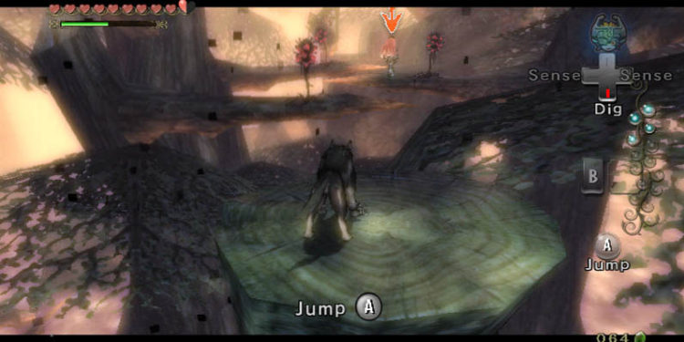

The Legend of Zelda: Twilight Princesss

Publication
- Publisher: Nintendo CO., Ltd
- Developer: Nintendo
- Release Date: November 1, 2006
Description
- Genre: Action
- Player(s): 1
- Setting: Fantasy, Medieval
The Legend of Zelda: Twilight Princess (トワイライトプリンセス) is the 13th installment in The Legend of Zelda series. Set over a century
after the events of Majora's Mask, the game follows Link as he attempts to save Hyrule from being subsumed by the Twilight Realm, an
alternate dimension wreathed in shadow - along the way, Link is able to transform between the forms of a Hylian and a wolf, and is aided by
Midna, a mysterious imp native to the Twilight Realm. -- Zelda Dungeon

Quote
"I'm thoroughly satisfied with what Twilight Princess has managed to achieve. There's no doubt in my mind that Nintendo has
once again crafted a video game that will be remembered for years to come. Link's back, and his new adventure on the venerable
GameCube hardware is absolutely the best way this console's life could have come to a close".
-- GameSpy